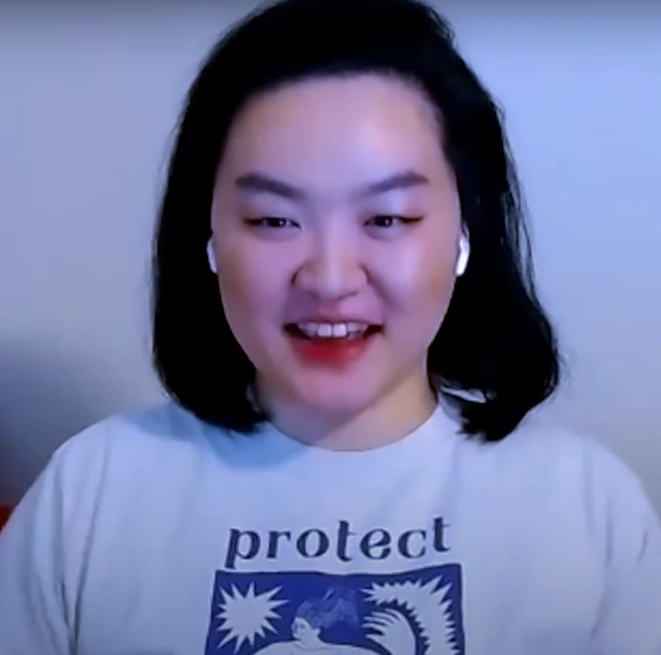

¡Conoce a Innersloth!
Innersloth es un estudio de desarrollo de videojuegos con sede en Redmond, Washington, más conocido por crear los juegos Among Us y la colección Henry Stickman. Crean juegos para Windows, macOS, Nintendo Switch y dispositivos móviles.
El equipo de desarrolladores perseveró cuando su producto no tuvo éxito inmediatamente después del lanzamiento del juego, y esperó y adaptó su estrategia. Innersloth enfrentó desafíos crecientes después de un rápido éxito y una mayor popularidad en 2020, dos años después de su lanzamiento.
Innersloth está estructurado como una sociedad de responsabilidad limitada. Los desarrolladores rara vez se reúnen en persona y prefieren el trabajo remoto.
Marcus Bromander
Innersloth fue fundado por el desarrollador de videojuegos Marcus Bromander, quién se desempeña como artista, animador y diseñador de juegos.
Forest Willard
Forest Willard juega un papel como Co-fundador, programador informático y jefe de gestión empresarial de Innersloth, quién contribuyó a la causa de que Innersloth se estableció como una empresa privada luego de dejar su trabajo en Microsoft.
Amy Liu

Amy Liu es artista, diseñadora y animadora. Liu fue contratada como artista para Innersloth poco después de ser establecida.
Gary Porter
Gary Porter es programador de Unity en Innersloth. Ha estado desarrollando juegos desde 2012 y lanzó su primer juego comercial, Super Daryl Deluxe, en 2017.
{kind=link}
{kind=link}
{kind=link}
{kind=link}